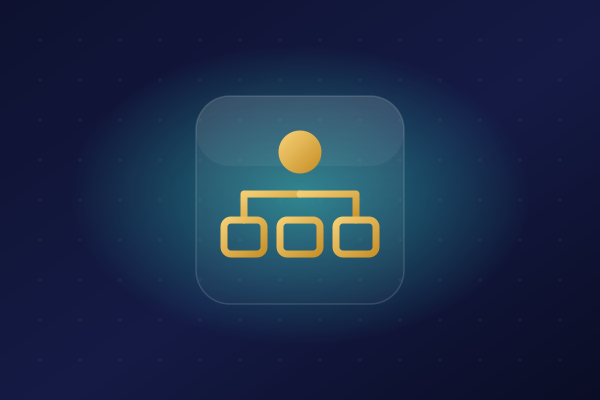
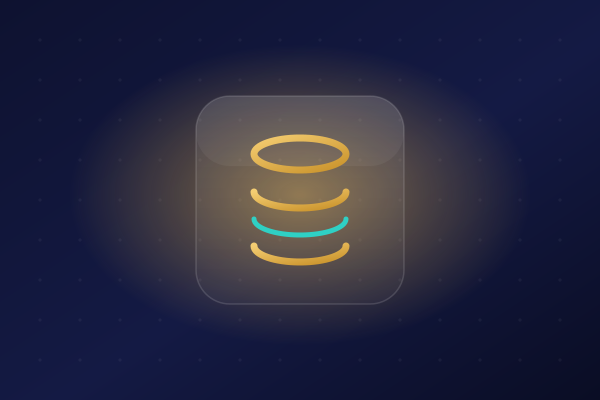
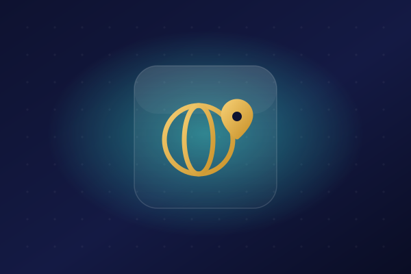
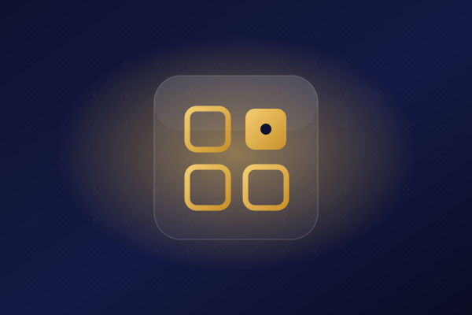
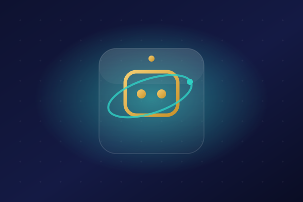
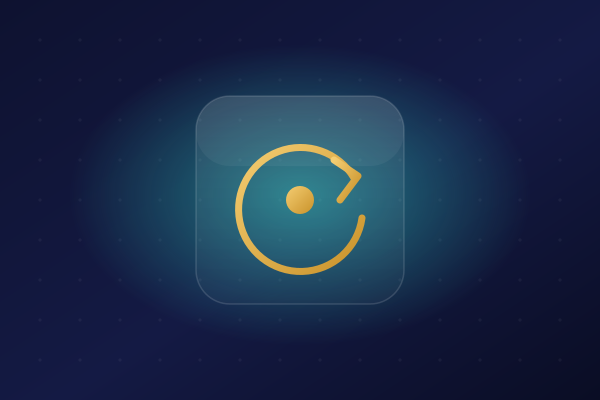
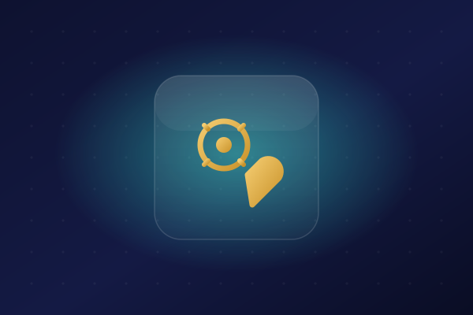

클라우드
비개발자가 AWS로 앱을 직접 배포한 이야기 — 클라우드 사용기 시작
코딩 몰라도 만든 앱을 내 손으로 AWS에 올린 전체 여정. EC2부터 도메인까지 한눈에 보는 지도.
ChatGPT·Claude·Copilot·Codex부터 AI 에이전트, 스킬·하네스·루프 엔지니어링까지. 어려운 말은 걷어내고, 비개발자 눈높이로 풀어냅니다.
13개의 글
코딩 몰라도 만든 앱을 내 손으로 AWS에 올린 전체 여정. EC2부터 도메인까지 한눈에 보는 지도.




이름은 다 들어봤는데 뭐가 다를까? ChatGPT·Claude Code·GitHub Copilot·OpenAI Codex의 역할과 차이를 한 문장 요약과 함께 정리했습니다.

"그거 그냥 챗봇 아니야?" 아닙니다. 물으면 답하는 챗봇과, 목표를 주면 스스로 해내는 에이전트의 결정적 차이를 쉽게 풀었습니다.
Anthropic이 공개 표준으로 내놓은 에이전트 스킬. SKILL.md로 AI에게 '업무 매뉴얼'을 붙이는 방식과, 도구·MCP와의 차이를 정리했습니다.

에이전틱 루프, 루프 엔지니어링, 하네스. ReAct부터 차근차근, "AI에게 매번 시키지 말고 스스로 반복하게" 만드는 개념을 쉽게 풀었습니다.
자연어로 말하면 AI가 코드를 만들어주는 '바이브 코딩'. 왜 지금 산업 전체가 이걸 이야기하는지, 비개발자에게 어떤 의미인지 쉽게 풀었습니다.

Claude Code·Cursor·Bolt·Lovable·Replit — 각 도구가 뭐가 다르고, 내 상황엔 무엇이 맞을까? 초보 눈높이로 비교했습니다.
검색 결과가 없습니다. 다른 키워드로 찾아보세요.